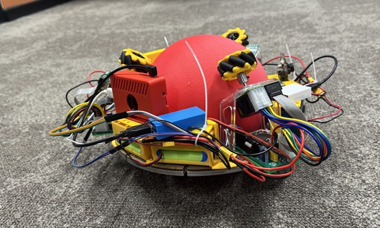

A Generalised Kinematic Framework for Ballbot Design: Optimisation, Prototyping and Learning-Based Control
From a generalised kinematic model, through five builds to the MK5 prototype, to one analytic controller for a family of 672 simulated bodies.
I design robots from the kinematics up, build and test them on hardware, and learn controllers for them in simulation.
I am a final-year PhD researcher in Mechanical Engineering at Newcastle University, supervised by Dr John Hedley and Dr Dehong Huo. Five builds led to MK5, a compact, self-stabilising ballbot with three Mecanum wheels.
My thesis, A Generalised Kinematic Framework for Ballbot Design: Optimisation, Prototyping and Learning-Based Control, asks what a family of similar robots must provide to share one control design. The answer, in simulation, is a short one: each body supplies its transmission map, the matrix that turns motor speeds into body motion, computed from its design angles. I submit the thesis in November 2026, with the viva expected in January 2027.



I work on robot morphology and control together: how the geometry of a robot decides what it can do, how to build it so that the hardware matches the model, and how one controller can serve many related bodies. My tools are symbolic kinematics, mechanical design and fabrication, synchronized sensing on the robot, and learning-based control in Webots and MuJoCo.
From a generalised kinematic model, through five builds to the MK5 prototype, to one analytic controller for a family of 672 simulated bodies.
A symbolic kinematic model for any wheel count, position and roller angle: how motor speed and torque reach the ball, balanced and task-specific layouts within motor limits, and which installation errors matter most.
On the MK5 prototype, a separate tilt-correction map returned the robot upright in 18 of 18 matched trials, against 3 of 18 for a shared map.
On a family of 672 simulated bodies, one analytic controller closed 69% of the gap between doing nothing and perfect tracking on 224 evaluation bodies when each body supplied its transmission map, against 18% with a nominal map.
A controlled comparison of how the goal is given to the policy and of hindsight experience replay, for learned ballbot controllers in Webots.
Scores on finite-horizon control benchmarks are reported against a matched zero-action run, so that a controller is credited only for what it adds.
Graduate Teaching Assistant at Newcastle University for MEC3027 Instrumentation and Drives, MEC3033 Introduction to Mechatronics Design, MEC8057 Mechatronics and Mobile Robots, and Applied AI and Robotics, at undergraduate and postgraduate levels. I guide students through Python and MATLAB control and sensing, Webots simulation, CAD, embedded platforms and laboratory debugging. Associate Fellow of Advance HE (AFHEA).